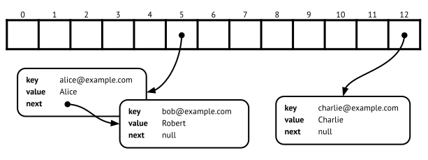

11.2 Separate chaining
Separate chaining solves the problem of collisions in hash tables. That is: when two distinct keys x and y hash to the same position in the internal array. Or in mathematical notation, x and y has a collision if h(x)\bmod N = h(y)\bmod N, where h is the hash function and N is the table size. Note that this can happen in two ways: either x and y have the same hash value (h(x)=h(y)) and will always collide, or they have different hash values but compress to the same index for hash table size N specifically.
Separate chaining is perhaps the most intuitive solution to the problem of collsions: If two keys want to inhabit the same cell in our hash table, we let them, and instead of a single (key,value)-entry we store a collection of entries in each array cell.
The word separate is because the data structure can not be stored directly in the hash table array, the array must contain pointers to some separate structure. This is a fundamental limitation of arrays, all cells must have a uniform size in memory.
That leaves the question of what data structure to use for the collections. We want a collection of (key,value)-entries that we can modify and search by key values. This is, we want some implementation of the Map ADT (see Section 8.3.2), and any such implementation works fine. It can for example be a simple linked list (Section 8.5), or a more efficient AVL-tree (Section 10.3).
So we should use an AVL tree, because it is faster than a linked list? This has some issues:
- AVL trees are more complicated than linked lists, which means that a linked list is usually faster if we only have a handful of elements.
- AVL trees use more memory for every entry compared to a linked list, since each AVL node needs two child pointers and linked list node only need one.
- We have to be able to compare the keys, and not just calculate a hash value, and for some datatypes it can be complex to define comparison and not just equality.

For these reasons, the typical choice of data structure is a linked list, hence the word chaining (a linked list forms a chain of elements). Figure 11.2 shows the memory content of a separate chaining hash table. Array index 5 points to a list with two elements, so there was a collision between the two emails. This may be because both have the same hash value, or more frequently because their hash values were compressed into the same index. What we know about the entries on index 5 is the following:
h(\text{``alice@example.com''})\bmod 13 = h(\text{``bob@example.com''})\bmod 13 = 5
Performing a lookup of any key that compresses to index 5, that is
when h(x)\bmod 13=5, will require a
linear search by key in the linked list with Alice and Bob in it. Note
that a lookup is required even for put operations: we need
to ensure that a key is not already present before we add an entry to
the linked list.
At this point, you should be concerned about performance. Searching in a linked list is not fast, and in fact if all our values end up in the same cell, our hash map will be slower than an AVL map (O(n) instead of O(log n)). The idea to avoid this problem is ensuring that the maximum length of any list in our table is a small constant. This involves two main techniques:
- Having a good hash function.
- When the hash table starts getting crowded, resize it by creating a larger table and transfering all the existing values to it.